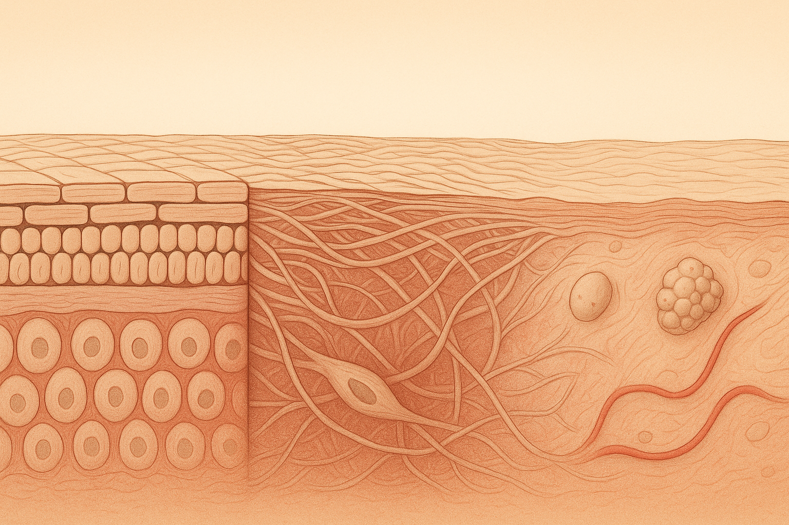
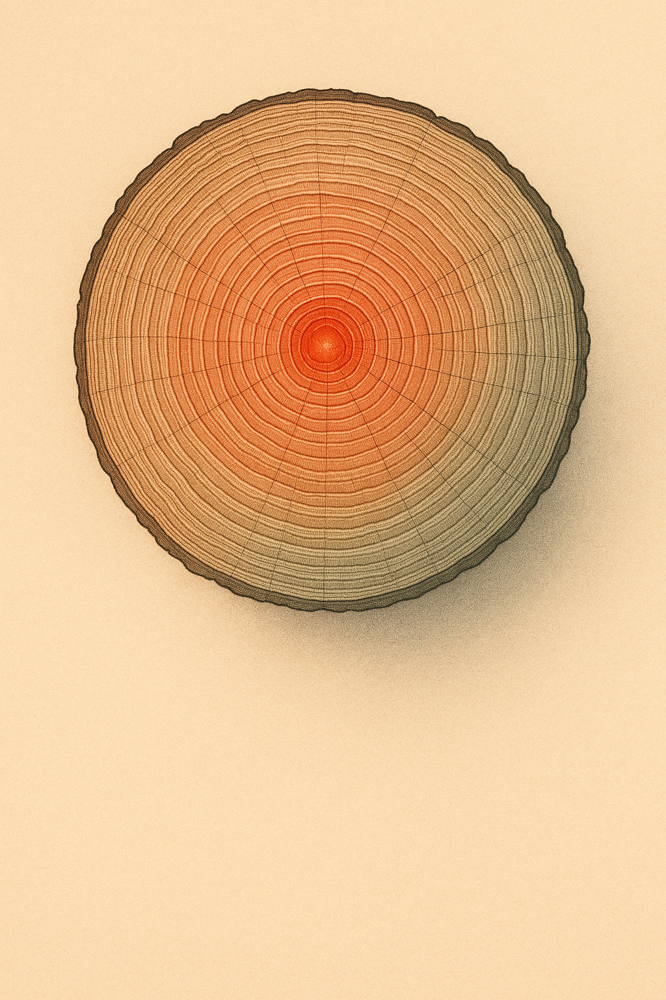

Review below. Reply approve to publish the Facebook post, or tell me edits.

Skin does not flip a switch on a birthday. Nobody wakes up on the morning of a milestone to find the rules have changed overnight. What actually happens is quieter and slower: your skin gradually shifts its priorities, and the thing that mattered most at 35 is rarely the thing that matters most at 55.
That is worth saying out loud, because so much skin advice is written as if we are all on the same timeline. We are not. So instead of a countdown, here is a calmer way to think about it: skin longevity, and how the job in front of you changes decade by decade.
Somewhere in your 30s, collagen production begins its slow annual decline. This is normal biology, not a fault. Collagen is the scaffolding that keeps skin looking firm and springy, and your body simply starts building a little less of it each year.
What this means in practice is that the story shifts from repair to maintenance and prevention. The unglamorous trio does most of the heavy lifting here: a healthy barrier, daily sunscreen, and consistency. Sun protection in particular is the closest thing skin has to a long game, because the damage you avoid now is damage you never have to think about later.
If your 30s feel like the decade where nothing dramatic is happening, that is kind of the point. Quiet maintenance is the work.
In your 40s, a couple of things tend to move up the priority list. Fibroblast activity (the cells that produce collagen and elastin) slows further, so elasticity becomes more noticeable as a theme. Skin can feel a little less bouncy, a little slower to snap back.
This is also the decade where cumulative sun exposure, the technical word is photoageing, tends to show itself: uneven tone, the odd patch of pigment, texture that was not there before. None of it appeared overnight. It is the slow accounting of years of light, quietly catching up.
Hormonal shifts can enter the picture too, changing how much oil your skin makes and how well it holds hydration. For some people skin gets drier, for others it swings the other way for a while. There is no single correct experience, which is part of why comparing yourself to a friend the same age can be misleading.
Into your 50s, oil glands quieten down, and skin tends to get drier and thinner. The priority shifts again, this time toward barrier support and gentleness.
This is the decade where the temptation to reach for the strongest active on the shelf can backfire. When skin is drier and more delicate, protecting the barrier and treating it kindly often does more than any single hero ingredient. Rich moisturisers, gentle cleansing, and not over-exfoliating tend to matter more than intensity.
The through-line across all three decades is not decline to be resisted. It is priorities shifting. Skin longevity means meeting your skin where it actually is and adjusting the plan as the plan changes, rather than treating your own face as a problem to be corrected.
Here is the honest caveat: everything above is an average, and averages hide enormous variation. Genetics, sun history, sleep, and stress mean two people the same age can genuinely be a decade apart in how their skin behaves.
That is exactly why comparison is a trap. Your friend's routine is a report from her timeline, not a prescription for yours. Swapping notes is lovely and useful. Copying wholesale, less so.
Before we go further, one honest note: Redermis is new, and we are still earning our reviews. We will not invent any.
That said, if there is a single low-effort habit that suits any decade, it is having something small and consistent you actually keep doing. For some people that is a ten-minute daily step, whether that is a good moisturiser, a moment of sun sense, or gentle light-based support like a ten-minute LED session, used as a cosmetic maintenance ritual that can help support the look of tone and firmness over weeks. To be clear, that is cosmetic, not medicine, and it is a slow, gradual thing, not a reversal of the clock. Nothing on this list rewinds time. The point of a constant is simply that it stays steady while your skin's priorities move around it.
If you are curious where something like red light therapy at home sits in all this, the honest answer is: as a maintenance step, not a rescue. It is a cosmetic device, not a treatment for any condition, and it works the way most good skin habits do, slowly and only if you keep at it. Ten minutes a day, most days, is the whole idea. It will not undo sun history or stand in for sunscreen. What a calm, consistent light step can offer is one steady thing to keep while your skin's priorities move around it.
So here is the prompt, and it is genuinely a question, not a pitch:
Which decade changed your skin the most, and what caught you off guard?
Maybe it was dryness arriving out of nowhere. Maybe it was tone, or breakouts you thought you had left behind in your 20s. Tell us in the comments and compare notes across the 30s, 40s and 50s. The variety in the replies is usually the most useful part.
If you ever want a closer look at the ten-minute light therapy step, the mask and full spec are here. Purely optional, and only if you are curious.
Nobody warns you that the skincare that carried you through your 30s can quietly stop pulling its weight a decade later.
Here is the thing: skin does not age on a schedule. It shifts priorities.
- 30s: mostly prevention and keeping the barrier strong.
- 40s: the conversation moves to elasticity and evening out tone.
- 50s: it often turns to dryness and being gentler with skin that has earned it.
All of it gradual, all of it shaped by your sun history and your genetics, which is why no two timelines ever quite match.
We have started thinking of it as skin longevity rather than a fight to win. Supporting skin through each stage, not battling it.
(One small aside: a calm daily red light therapy step is one of the few things that suits any decade. Cosmetic, not medical, and entirely optional. Link is in the comments if you want a closer look.)
We are still new here and earning trust the slow way, so we would rather learn from you than lecture. What changed in your skin that you genuinely did not see coming, and roughly what age did it land? Comparing notes here is honestly useful for all of us, so tag a friend who is in a different decade and swap timelines.
**CTA:** What changed in your skin that you did not see coming, and roughly what age did it hit? Comparing notes here is genuinely useful.
**Hashtags:** #skinlongevity #skincareover40 #agingwell #skincarecommunity #redlighttherapy
**First comment (post the link here, not in the body):** If you want a closer look, the mask and full spec are here: https://redermis.com.au/products/medical-grade-silicone-7-wevelenghts-photon-led-mask-face-and-neck-red-light-therapy-flexible-facial-mask-repair-skin-wireless-use

Your skin doesn't age on a birthday. It changes its mind slowly.
30s, mostly prevention.
40s, elasticity and tone.
50s, dryness and gentleness.
All gradual. All personal.
Two people the same age can be a decade apart, so stop comparing timelines. Yours is the only one that matters.
Think of it as skin longevity, not damage control: your priorities simply shift over time.
A gentle ten minutes a day of red light therapy fits any decade, as one small maintenance step (cosmetic device, not medicine, and never the whole story).
We're a new brand still earning our reviews, so we'd rather ask than assume.
Save this for the decade you're in, and tell us: which decade surprised your skin the most?
(Link in bio if you ever want a closer look.)
**CTA:** Tell us: which decade surprised your skin the most? (Link in bio if you ever want a closer look.)
**Hashtags:** #skinlongevity #skinhealth #skincareover40 #skincareover50 #redlighttherapy #ledfacemask #skinbarrier #athomeskincare #skincareroutine #healthyskin #skinageing #over30skincare #ausskincare
**Title:** How Your Skin Changes in Your 30s, 40s and 50s: A Skin Longevity Guide
**Description:** Your skin reorders its priorities as the years pass. In your 30s it is prevention and a strong barrier; in your 40s it moves to elasticity and even tone; in your 50s it turns to dryness and gentleness. No two timelines look the same, so think skin longevity, not a battle against the clock. A calm daily step, even 10 minutes of red light therapy at home, suits any decade as a cosmetic ritual, not a medical treatment. We are a new brand still earning our reviews, and we will not invent any.
**CTA:** Tell us: what is your skin asking for right now, and what decade are you in?
**Hashtags:** #skinlongevity #skincareover40 #redlighttherapy #skincareroutine #skinageing